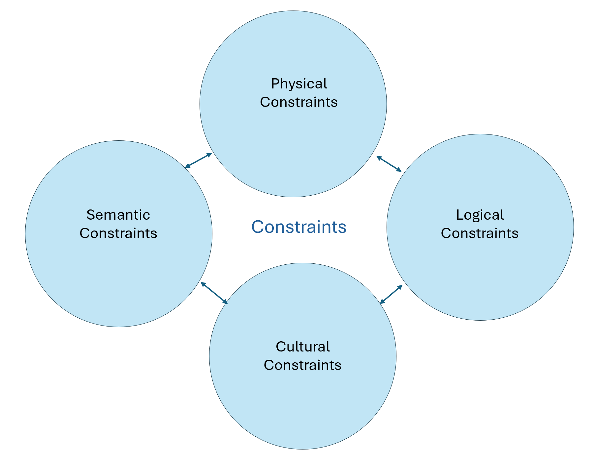
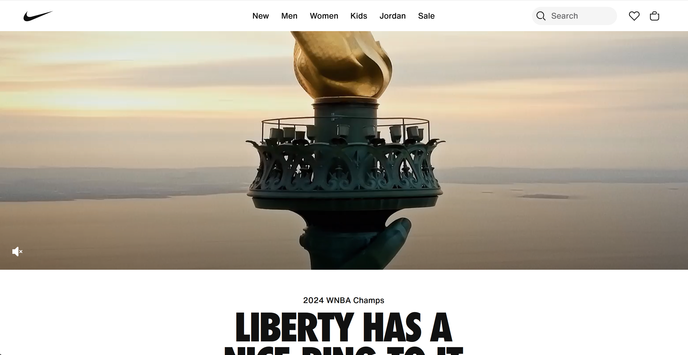

Here I mapped out the 4 constraints discussed in the reading. Physical Constraints constrain possible outcomes. Semantic Constraints rely upon the meaning of the situation to control the set of possible actions. Cultural constraints rely upon accepted cultural conventions, even if they do not affect the physical or semantic operation of the device. Logical constraints decide where pieces or actions should go and what the expected outcome of that would be. All of these constraints impact the user in terms of how they interact with a product. The more constraints placed can result in the user having an easy time navigating a webpage for example if there is only one logical path to take but if the user steers off of assumptions this can lead to them getting very stuck. Few constraints can provide the user with more choice and freedom but also can lead to a variety of unexpected results. It is important to remember the possible outcome of each constraint placed and how it can affect the user and their experience.

The purpose of this reading was to share with the reader how they should stand up to their boss when it comes to design choices. The author further gets his point across by even writing emails that the reader could send to their boss if they deemed it necessary. One of these design choices is when the boss suggests lots of pop-ups and sign-up forms when a user enters a website. While the boss may have good intentions, he probably doesn’t realize how this would be overwhelming for a user and how it leads to a decrease in traffic. The author also makes sure to point out that sometimes these “bad” ideas suggested can be turned into good things with enough brainstorming and testing.
One example of a website that I thought did a good job on their home page was Nike. When you first enter the website, you are not hit with tons of pop-ups and sign-ins. You are able to actually explore the page and find the content you want.
Uniqueness
The word I chose for this reading passage was “uniqueness” because when designing a web page, it is crucial to recognize there is not standard user. Each person who iterates with your website will have different goals and values they want communicated through the application. A key problem in web design is that web designers, developers, and other stakeholders tend to project their preferences onto users, assuming that most users share their opinions. After reading this passage and reflecting, I realized that this may apply to me as well. Sometimes I believe my idea is the best because it is most applicable to my own life, not considering how others have their own experiences and outlook. This is something important to remember in my own career when I am working on teams. Recognizing the differences between people in a group can help to make more productive conversations and overall decisions.